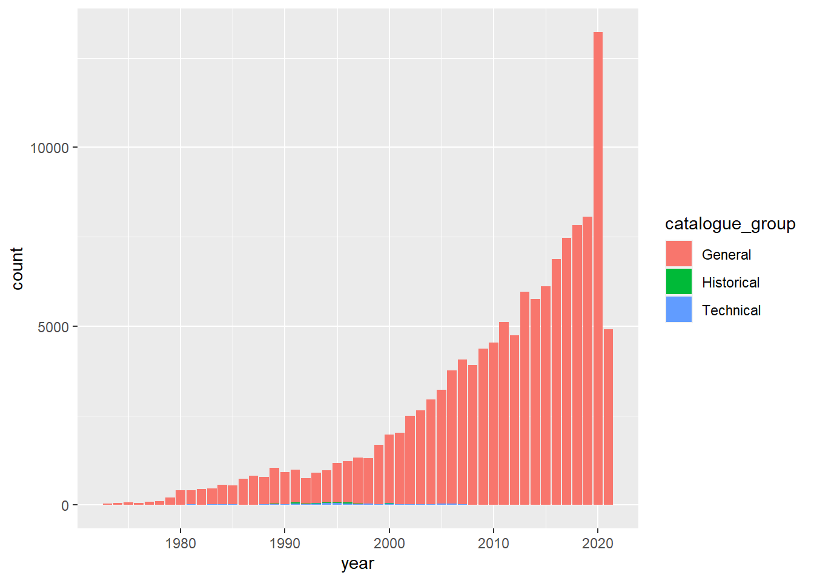
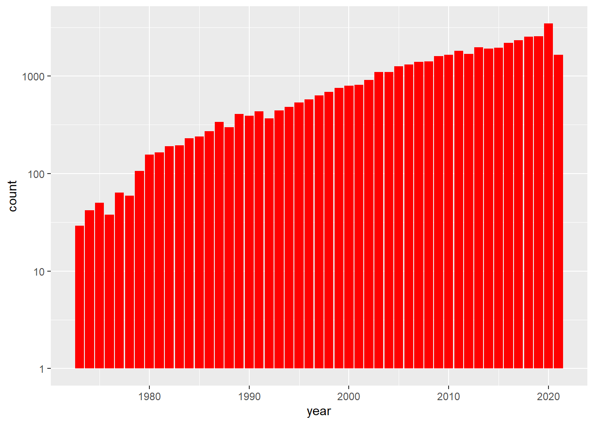
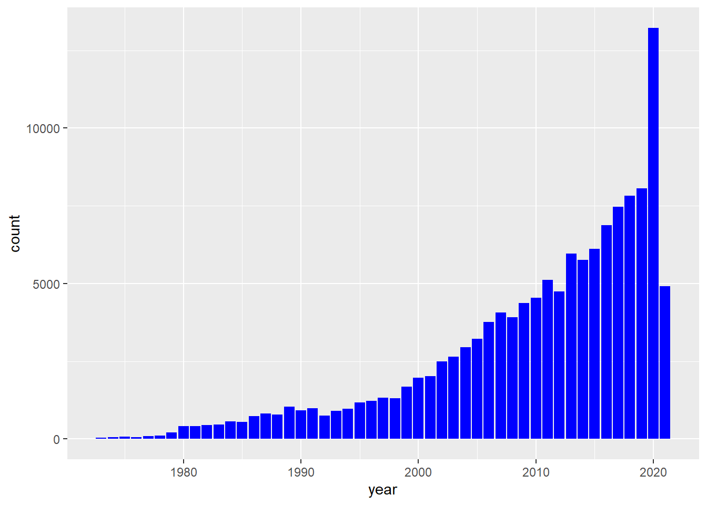
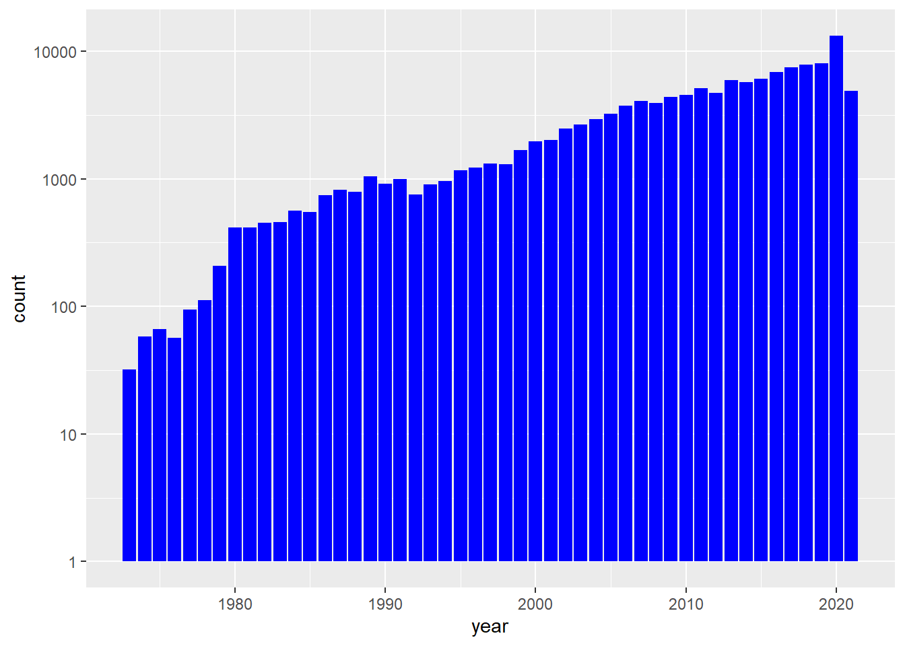
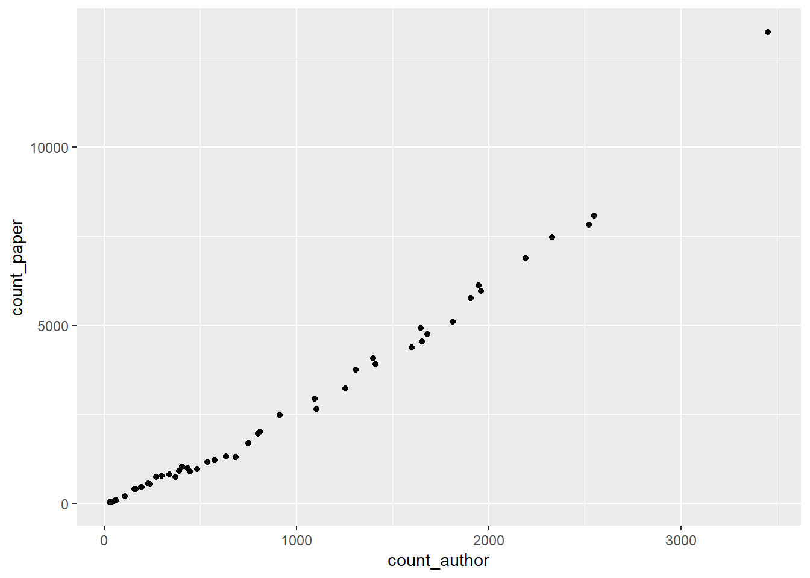
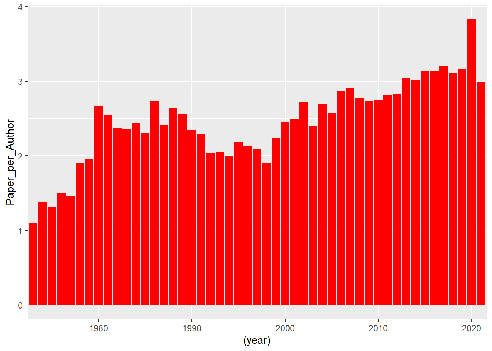

## here() starts at C:/Data/Github/MADA/CARTERCOLEMAN-MADA-portfoliopapers <- readr::read_csv('https://raw.githubusercontent.com/rfordatascience/tidytuesday/master/data/2021/2021-09-28/papers.csv')## Rows: 29434 Columns: 4## -- Column specification --------------------------------------------------------
## Delimiter: ","
## chr (2): paper, title
## dbl (2): year, month##
## i Use `spec()` to retrieve the full column specification for this data.
## i Specify the column types or set `show_col_types = FALSE` to quiet this message.authors <- readr::read_csv('https://raw.githubusercontent.com/rfordatascience/tidytuesday/master/data/2021/2021-09-28/authors.csv')## Rows: 15437 Columns: 4## -- Column specification --------------------------------------------------------
## Delimiter: ","
## chr (4): author, name, user_nber, user_repec##
## i Use `spec()` to retrieve the full column specification for this data.
## i Specify the column types or set `show_col_types = FALSE` to quiet this message.programs <- readr::read_csv('https://raw.githubusercontent.com/rfordatascience/tidytuesday/master/data/2021/2021-09-28/programs.csv')## Rows: 21 Columns: 3## -- Column specification --------------------------------------------------------
## Delimiter: ","
## chr (3): program, program_desc, program_category##
## i Use `spec()` to retrieve the full column specification for this data.
## i Specify the column types or set `show_col_types = FALSE` to quiet this message.paper_authors <- readr::read_csv('https://raw.githubusercontent.com/rfordatascience/tidytuesday/master/data/2021/2021-09-28/paper_authors.csv')## Rows: 67090 Columns: 2## -- Column specification --------------------------------------------------------
## Delimiter: ","
## chr (2): paper, author##
## i Use `spec()` to retrieve the full column specification for this data.
## i Specify the column types or set `show_col_types = FALSE` to quiet this message.paper_programs <- readr::read_csv('https://raw.githubusercontent.com/rfordatascience/tidytuesday/master/data/2021/2021-09-28/paper_programs.csv')## Rows: 53996 Columns: 2## -- Column specification --------------------------------------------------------
## Delimiter: ","
## chr (2): paper, program##
## i Use `spec()` to retrieve the full column specification for this data.
## i Specify the column types or set `show_col_types = FALSE` to quiet this message.joined_df <-
left_join(papers, paper_authors) %>%
left_join(authors) %>%
left_join(paper_programs) %>%
left_join(programs)%>%
mutate(
catalogue_group = str_sub(paper, 1, 1),
catalogue_group = case_when(
catalogue_group == "h" ~ "Historical",
catalogue_group == "t" ~ "Technical",
catalogue_group == "w" ~ "General"
),
.after = paper
) ## Joining, by = "paper"## Joining, by = "author"## Joining, by = "paper"## Joining, by = "program"## # A tibble: 130,081 x 12
## paper catalogue_group year month title author name user_nber user_repec
## <chr> <chr> <dbl> <dbl> <chr> <chr> <chr> <chr> <chr>
## 1 w0001 General 1973 6 Educatio~ w0001~ Fini~ finis_we~ <NA>
## 2 w0002 General 1973 6 Hospital~ w0002~ Barr~ barry_ch~ pch425
## 3 w0003 General 1973 6 Error Co~ w0003~ Swar~ swarnjit~ <NA>
## 4 w0004 General 1973 7 Human Ca~ w0004~ Lee ~ <NA> pli669
## 5 w0005 General 1973 7 A Life C~ w0005~ Jame~ james_sm~ psm28
## 6 w0006 General 1973 7 A Review~ w0006~ Vict~ victor_z~ <NA>
## 7 w0007 General 1973 8 The Defi~ w0007~ Lewi~ <NA> <NA>
## 8 w0008 General 1973 9 Multinat~ w0008~ Merl~ <NA> <NA>
## 9 w0008 General 1973 9 Multinat~ w0008~ Robe~ robert_l~ pli259
## 10 w0009 General 1973 9 From Age~ w0004~ Lee ~ <NA> pli669
## # ... with 130,071 more rows, and 3 more variables: program <chr>,
## # program_desc <chr>, program_category <chr>## Rows: 130,081
## Columns: 12
## $ paper <chr> "w0001", "w0002", "w0003", "w0004", "w0005", "w0006",~
## $ catalogue_group <chr> "General", "General", "General", "General", "General"~
## $ year <dbl> 1973, 1973, 1973, 1973, 1973, 1973, 1973, 1973, 1973,~
## $ month <dbl> 6, 6, 6, 7, 7, 7, 8, 9, 9, 9, 9, 9, 10, 10, 10, 10, 1~
## $ title <chr> "Education, Information, and Efficiency", "Hospital U~
## $ author <chr> "w0001.1", "w0002.1", "w0003.1", "w0004.1", "w0005.1"~
## $ name <chr> "Finis Welch", "Barry R Chiswick", "Swarnjit S Arora"~
## $ user_nber <chr> "finis_welch", "barry_chiswick", "swarnjit_arora", NA~
## $ user_repec <chr> NA, "pch425", NA, "pli669", "psm28", NA, NA, NA, "pli~
## $ program <chr> NA, NA, NA, NA, NA, NA, NA, NA, NA, NA, NA, NA, NA, N~
## $ program_desc <chr> NA, NA, NA, NA, NA, NA, NA, NA, NA, NA, NA, NA, NA, N~
## $ program_category <chr> NA, NA, NA, NA, NA, NA, NA, NA, NA, NA, NA, NA, NA, N~## Warning: `funs()` was deprecated in dplyr 0.8.0.
## Please use a list of either functions or lambdas:
##
## # Simple named list:
## list(mean = mean, median = median)
##
## # Auto named with `tibble::lst()`:
## tibble::lst(mean, median)
##
## # Using lambdas
## list(~ mean(., trim = .2), ~ median(., na.rm = TRUE))## # A tibble: 1 x 9
## paper catalogue_group year month title author name program_desc
## <int> <int> <int> <int> <int> <int> <int> <int>
## 1 0 0 0 0 0 0 0 530
## # ... with 1 more variable: program_category <int>catalouge_plot <- clean_df %>%
ggplot(aes(x=year, fill=catalogue_group)) + geom_bar()
print(catalouge_plot)
Create two new data that contain either authors through time or papers through time.
## Rows: 130,081
## Columns: 2
## $ year <dbl> 1973, 1973, 1973, 1973, 1973, 1973, 1973, 1973, 1973, 1973, 1973,~
## $ name <chr> "Finis Welch", "Barry R Chiswick", "Swarnjit S Arora", "Lee A Lil~## Rows: 130,081
## Columns: 2
## $ year <dbl> 1973, 1973, 1973, 1973, 1973, 1973, 1973, 1973, 1973, 1973, 1973~
## $ paper <chr> "w0001", "w0002", "w0003", "w0004", "w0005", "w0006", "w0007", "~log_authors_plot <- Author_df %>%
ggplot(aes(x=year)) +
geom_bar(fill = "red") + scale_y_continuous(trans = "log10")
print(log_authors_plot)
Without log scale

log_papers_plot <- Paper_df %>%
ggplot(aes(x=year)) +
geom_bar(fill = "blue") + scale_y_continuous(trans = "log10")
print(log_papers_plot) #### By comparing the two charts, we can see that the papers increase through time as well. But they do so to an order of magnitude greater than there are authors! That’s an intersting relationship for sure! Shows that not only is NBER increasing it’s staff over time, but they are publishing more papers per author over time as well. How much though?
Authors
author_count <- as.data.frame(table(Author_df$year))
colnames(author_count) <- c("year", "count_author")
view(author_count) Papers
paper_count <- as.data.frame(table(Paper_df$year))
colnames(paper_count) <- c("year", "count_paper")
view(paper_count)Merge together
plot
efficiency_plot <- author_efficiency %>%
ggplot(aes(x=count_author, y=count_paper)) +
geom_point()
print(efficiency_plot)
Now, we are going to run a linear regression just to see what the slope is.
papers_per_author <- lm(count_paper ~ count_author, data=author_efficiency)
summary(papers_per_author)##
## Call:
## lm(formula = count_paper ~ count_author, data = author_efficiency)
##
## Residuals:
## Min 1Q Median 3Q Max
## -584.27 -249.27 -37.99 249.68 2152.86
##
## Coefficients:
## Estimate Std. Error t value Pr(>|t|)
## (Intercept) -439.30502 93.01999 -4.723 2.13e-05 ***
## count_author 3.33144 0.07479 44.541 < 2e-16 ***
## ---
## Signif. codes: 0 '***' 0.001 '**' 0.01 '*' 0.05 '.' 0.1 ' ' 1
##
## Residual standard error: 433.1 on 47 degrees of freedom
## Multiple R-squared: 0.9769, Adjusted R-squared: 0.9764
## F-statistic: 1984 on 1 and 47 DF, p-value: < 2.2e-16author_efficiency <- author_efficiency %>%
mutate(Paper_per_Author = count_paper / count_author)
view(author_efficiency)Plot
per_cap_paper <- author_efficiency %>%
ggplot(aes(x=(year), y=Paper_per_Author)) +
geom_bar(stat = "identity", fill = "red") +
scale_x_discrete(breaks=c("1970", "1980", "1990", "2000", "2010", "2020"))
print(per_cap_paper)